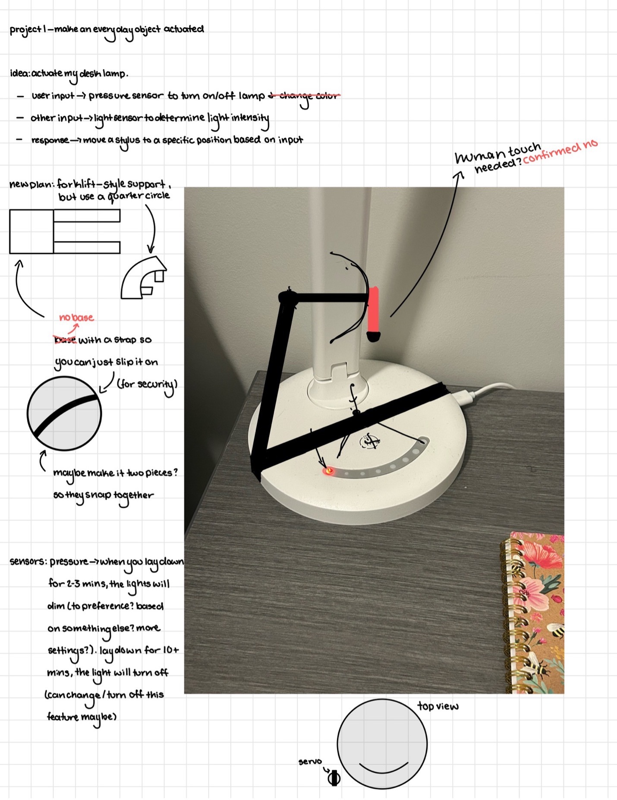
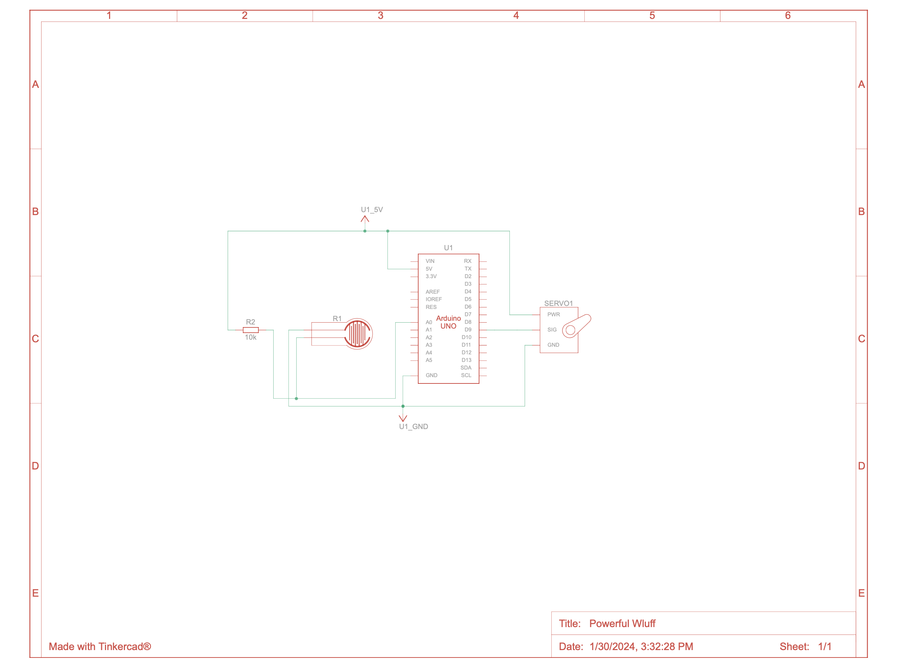
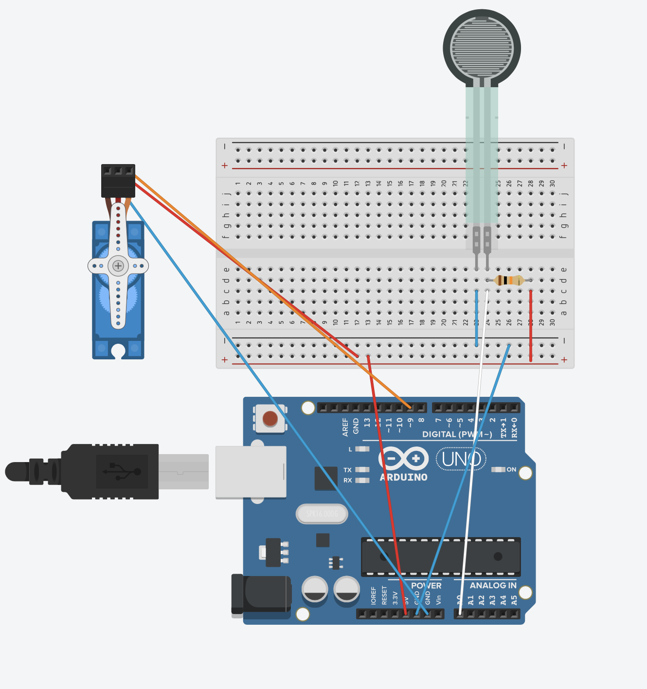

Device Idea and Functionality
I designed an actuated desk lamp. Once the device senses pressure for a period of time, the light will turn on. When that pressure is no longer there, the device will turn the light on. The main concept of the idea was to make it easier to get into bed. Often in order to sleep at night, people want their lights to be turned off. However, when actually getting into bed, they might like their lights to be on so they can see. This device fixes this problem by sensing when the user has been laying on their pillow for a set amount of time and turning off the lamp when it has been reached. Now, people can get into bed and go to sleep without having to manually turn off their lights!
Prototype
Wiring/Circuit Diagrams
